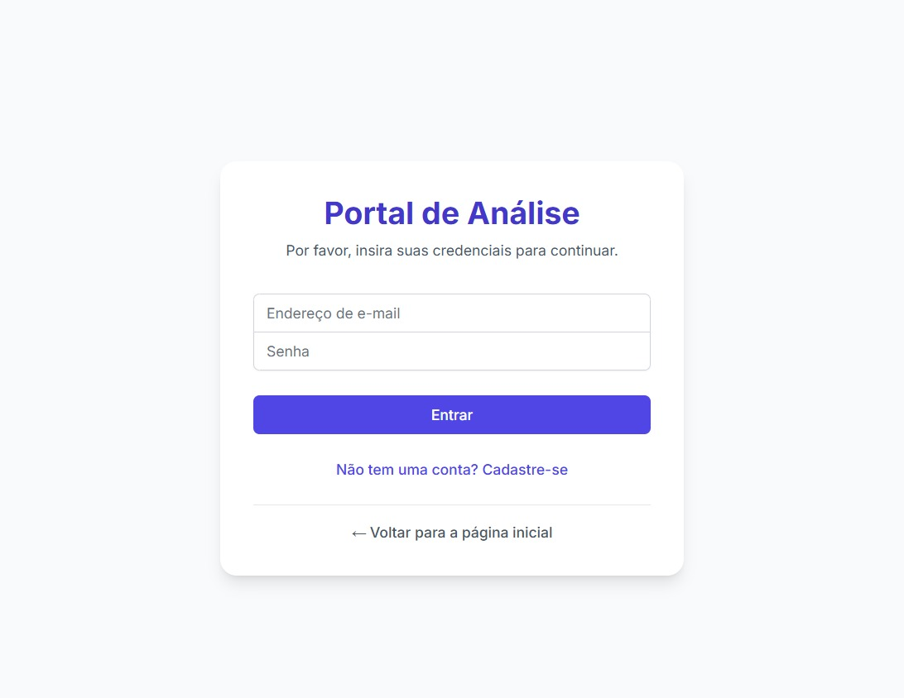
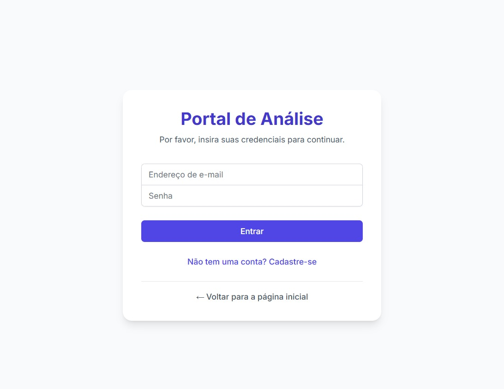

O Desafio
Gerenciar o fluxo de processos de outorga, perfuração e cadastros de recursos hídricos na Gerência de Águas Subterrâneas (GASUB) da SEMA-MT demandava uma ferramenta centralizada para otimizar a análise, acompanhamento de prazos e visualização espacial das demandas.
A Solução
Desenvolvi o Gerenciador GASUB, um sistema web completo que oferece portais dedicados para analistas e equipes de monitoramento, facilitando o controle e a gestão eficiente de todos os processos relacionados a águas subterrâneas.
 

Acesso Centralizado e Seguro
O sistema apresenta uma tela inicial intuitiva que direciona o usuário para o módulo apropriado:
- Análise de Processos: Dedicado aos analistas responsáveis pela avaliação técnica de outorgas, perfurações e cadastros.
- Monitoramento: Focado na equipe de acompanhamento e conformidade das outorgas emitidas.
Cada portal possui acesso restrito via login e senha, garantindo a segurança e a rastreabilidade das ações realizadas no sistema.
Painel de Controle do Analista
O coração do módulo de análise, o Painel de Controle, oferece uma visão clara e organizada das demandas:
- Adicionar Tarefa: Registro rápido de novos processos recebidos, vinculando número e data.
- Minhas Tarefas Pendentes: Listagem dos processos sob responsabilidade do analista, com data de recebimento, prazo restante calculado automaticamente e ações diretas (Iniciar Análise, Excluir).
- Processos com Pendência Externa: Acompanhamento de processos que dependem de manifestação de outros órgãos, exibindo interessado, órgão externo, prazo (se aplicável) e status atual.
- Navegação Rápida: Acesso direto às funcionalidades de Visualização no Mapa e Dashboard de Produtividade.
Visualização Geográfica Inteligente
A ferramenta "Meus Processos no Mapa" integra a gestão de processos com a análise espacial:
- Localização Visual: Exibe a localização geográfica dos processos analisados ou pendentes.
- Busca por Processo: Permite localizar rapidamente um processo específico no mapa.
- Controle de Camadas: Oferece opções para alternar o mapa base (Padrão/Satélite) e sobrepor camadas geoespaciais relevantes (Terras Indígenas, Unidades de Conservação), auxiliando na análise contextual.
- Filtragem de Status: Possibilita visualizar apenas processos pendentes ou com parecer emitido.
Dashboard de Produtividade
O módulo de Produtividade transforma os dados do sistema em insights gerenciais:
- Filtros Flexíveis: Permite analisar a performance por Período, Objeto (tipo de processo) e Status.
- Indicadores Chave: Apresenta rapidamente o Total Analisado, Processos Com Pendência e Pareceres Emitidos no período selecionado.
- Análise Temporal: Gráfico de barras mostrando a evolução do número de processos analisados mês a mês.
- Distribuição Geográfica: Gráfico de pizza (donut chart) exibindo os 5 municípios com maior número de processos analisados, facilitando a identificação de áreas com maior demanda.